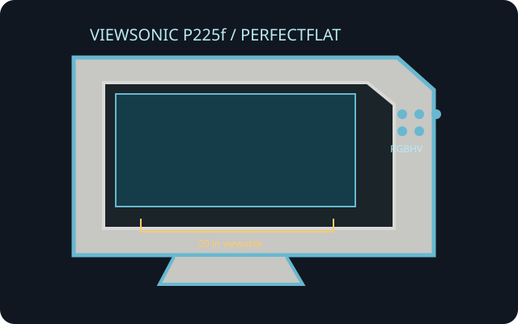

[ INDIVIDUAL COMPONENT // VIEWSONIC ]
ViewSonic P225f PerfectFlat
A 22-inch professional PerfectFlat CRT monitor with a 20-inch visible image, fine uni-pitch aperture grille and VGA/BNC inputs.

IDENTIFICATION: ViewSonic P225f is a multiscan CRT monitor, not a fixed-resolution panel. Verify the exact model name, rear AC label and attached input configuration.
Technical specifications
| Tube / viewable image | 22-inch nominal PerfectFlat aperture-grille CRT; 20.0-inch viewable diagonal; 4:3 aspect. |
|---|---|
| Grille pitch | 0.24 mm aperture-grille uni-pitch. |
| Resolution and refresh | No fixed native raster. Maximum is 2048 × 1536 at up to 79 Hz; recommended high-resolution mode 1600 × 1200 at 99 Hz. Verify against input bandwidth and manual's timing chart. |
| Connectors | One HD15 / DE-15 analog RGB input and five BNC analog RGBHV connections (R, G, B, H, V sync); IEC 3-pin AC inlet. |
| Power | Approximately 130 W operating; grounded AC input. Use the rear rating plate to determine regional mains requirements and cord rating. |
| Host compatibility | Analog VGA RGB or separate RGBHV signal only. HDMI/DisplayPort-only computers require an active converter; BNC connectors do not accept digital video or automatically decode component video. |
Compatibility and safety notes
Choose HD15 or BNC based on the cable and source; BNC requires the correct separate RGB and sync assignment. Use a timing within the monitor's scan limits. The display is heavy and contains hazardous high voltage even when unplugged; do not open it or attempt internal adjustment without CRT service qualifications.
Manufacturer and manual references
- ViewSonic P225f product specification sheetManufacturer-published screen size, visible area, resolution and grille pitch.
- ViewSonic P225f User ManualModel manual for connector, operation, power and safety detail.